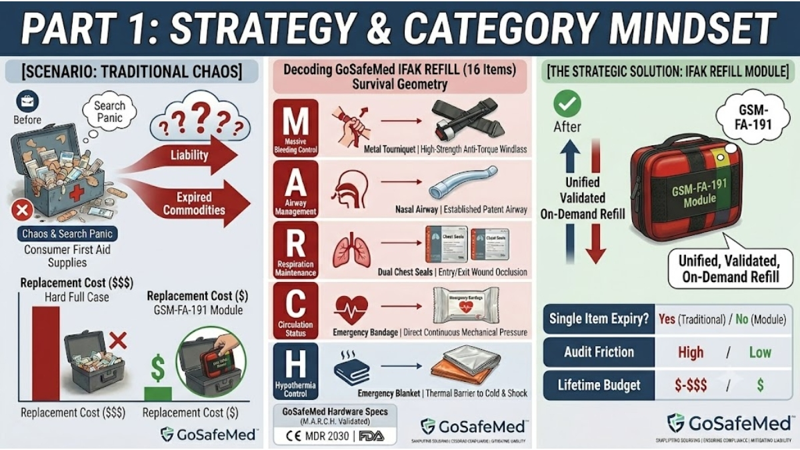

Why Mismatched First Aid Kits Fail in Real Trauma: The Case for Action-Based Modular Refills
MAY 24, 2026

When a severe trauma event happens on a factory floor, inside a logistics hub, or during a tactical training session, you aren't dealing with trained paramedics. You are relying on ordinary employees or safety wardens to step in.
In these high-stress moments, traditional industrial first aid kits create a dangerous operational bottleneck. When opened, they look like a cluttered soup of scattered bandages, safety pins, and antiseptic wipes. For an untrained employee experiencing cognitive overload, this chaotic layout triggers search panic. They waste critical seconds digging for a tool they cannot identify, while a co-worker suffers from severe hemorrhaging or respiratory failure.
For OHS (Occupational Health and Safety) managers and PPE procurement officers, this operational failure is paired with a financial one. If an audit reveals that just one or two high-use trauma items are missing or expired, corporate compliance rules often force the organization to discard or replace the entire expensive hard-case station.
Transitioning to an action-based modular first aid system solves both crises simultaneously: it eliminates field confusion for non-professional responders and radically lowers corporate inventory costs through targeted, on-demand replenishment.
1. Eliminating “Search Panic”: Matching the Injury to the Module
Medical trauma protocols like M.A.R.C.H. prove that the first five minutes dictate survival. Non-professional bystanders do not have the time to audit a loose pile of medical components under pressure. They need an intuitive, physical guide.
Instead of mixing all supplies together, a professional-grade system categorizes critical gear into distinct, high-visibility modules based on the emergency scene (e.g., BLEEDING, BURN, WOUND, and IFAK REFILL).
Consider a critical thoracic puncture or a severe industrial crush injury. With an action-based system, the responder doesn't need to think. They see severe trauma, and they pull the dedicated IFAK REFILL Module.
Inside that specific module, your unique hardware configuration takes over the rescue process. The responder opens a single pouch and immediately finds exactly what the scenario demands:
- The Airway & Respiratory Fix: The responder is handed Dual Chest Seals (2 × Chest Seal) and a Nasal Airway & Lubricant. Even a non-professional worker can understand the visual cue: apply the chest seals to seal open thoracic wounds (entry and exit) to stabilize breathing, and insert the nasal passage to secure the airway.
- The Arterial Hemorrhage Fix: For catastrophic bleeding, the module immediately presents a heavy-duty Metal Tourniquet and an Emergency Bandage 4". The rigid windlass of a metal tourniquet allows an untrained teammate to apply maximum torque to stop arterial bleeding instantly, without the plastic-buckle failures common in cheap, generic kits.
2. The Financial Logic of “On-Demand Refills” vs. “Whole-Kit Disposal”
From a procurement and due diligence perspective, maintaining high-volume first aid stations across multiple facilities is a major hidden operational expense.
In standard corporate safety setups, high-use items—such as the Compressed Gauze, Combat Tape, or Gloves—are consumed frequently for minor incidents, or they reach their compliance expiration dates.
- The Wasteful Reality: In a non-modular setup, when these two or three high-stakes items are missing, the entire first aid station is flagged as non-compliant during safety audits. Because items are scattered, companies frequently throw away perfectly good outer cases and unexpired basic supplies, re-purchasing complete kits over and over again.
- The Cost-Efficient Solution: GoSafeMed’s IFAK REFILL Module introduces precision cost-saving. It groups the 16 most heavily consumed, high-liability trauma items—including the Aluminum Splint 18", Elastic Bandage, Marker, and Combat Cravat—into one single, pre-synchronized five-year shelf life replenishment pack.
When your specialized trauma gear is deployed or expires, your client doesn't buy a new rigid station. They keep their high-visibility red hard case (GSM-FA-240) and simply purchase a targeted refill module. This keeps their workplace continuously audit-ready, keeps their warehouse clutter-free, and drastically reduces long-term maintenance spend.
Technical Performance: The 16-Item Tactical Refill Configuration
For procurement panels evaluating corporate liability risks, every component in our action-based modular first aid system corresponds to a definitive, audit-ready field application:
| Critical Injury Focus | Embedded GoSafeMed Component Configuration | Real-World Non-Professional Benefit |
|---|---|---|
| Severe Bleeding & Shock |
1 × Metal Tourniquet 1 × Emergency Bandage 4" 1 × Compressed Gauze 1 × Emergency Blanket |
Allows untrained bystanders to stop arterial bleeding instantly with durable metal windlass hardware and mitigate hypothermia shock. |
| Airway & Open Thoracic Wounds |
2 × Chest Seal 1 × Nasal Airway & Lubricant |
Direct, fool-proof stabilization of sucking chest wounds and respiratory blockages without complex clinical tools. |
| Immobilization & Field Triage |
1 × Aluminum Splint 18" 1 × Combat Cravat / Combat Tape 1 × Medical Shears 19cm / Marker / Gloves |
Provides the exact mechanical tools needed to cut heavy industrial clothing, split fractures, and mark treatment times for incoming EMS. |
Securing Supply Chain Certainty
For international PPE distributors and OHS consultants, your clients are demanding solutions that protect both their workforce and their bottom line. Selling loose, fragmented commodities leaves your business vulnerable to low-cost competitors.
By offering GoSafeMed's pre-sorted, contract-ready trauma management kits and modular refill lines, you provide a sophisticated system that solves user panic and slashes corporate inventory waste. Backed by CE MDR (valid through 2030) and FDA Registration, we deliver the exact technical data packages required to win enterprise contracts and secure high-margin buyer retention.
Sourcing Review: Ready to upgrade your clients from cluttered first aid boxes to action-based modular supply lines? Reply with CATALOG to download the official 2026 GoSafeMed Technical Specs Booklet and distributor pricing charts.